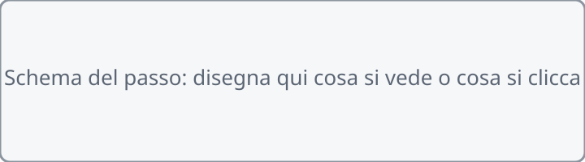

{{CLASSE}} · {{MATERIA}} · {{GIORNO}} {{DATA}} · {{RIGA_CONSEGNA}}
{{TITOLO_ORA_IT}}
{{TITOLO_ORA_AR}}
{{TITOLO_ORA_ZH}}
La pagina viene aggiornata spesso durante la lezione: premi F5 per vedere la versione nuova. · اضغط F5 لرؤية النسخة الجديدة. · 按 F5 查看新版本。
Chi sei?
Scrivi nome e cognome: serve al cruscotto per vedere a che punto sei.
{{INTRO_TITOLO}}
{{INTRO_IT}}
{{INTRO_AR}}
{{INTRO_ZH}}
Sei bloccato? Scrivi la domanda nella casella dell'assistente in fondo alla pagina: ti risponde subito. Alza la mano solo se il PC non funziona (non si accende, niente rete, il programma non si apre).
إذا علقت، اكتب سؤالك في خانة المساعد أسفل الصفحة: يجيبك فوراً. ارفع يدك فقط إذا كان الحاسوب لا يعمل.
卡住了就在页面底部的助手框里写问题，它马上回答。只有电脑坏了才举手。
{{PASSO1_IT}} (Vinci subito: poche mosse, quasi impossibile sbagliare)
{{PASSO1_AR}}
{{PASSO1_ZH}}
{{PASSO1_TESTO_IT}} Nomina il componente o il menu esatto e di che cosa si tratta. FATTO!
{{PASSO1_TESTO_AR}}
{{PASSO1_TESTO_ZH}}

{{PASSO2_IT}} (codice da copiare)
{{PASSO2_AR}}
{{PASSO2_ZH}}
{{PASSO2_TESTO_IT}}
{{PASSO2_TESTO_AR}}
{{PASSO2_TESTO_ZH}}
{{CODICE_DA_COPIARE}}
Quiz: {{QUIZ_ARGOMENTO}} ({{QUIZ_N}} domande, {{QUIZ_MINUTI}} minuti)
اختبار
测验
Premi il bottone verde, rispondi e premi Invia. Servono {{QUIZ_SOGLIA}} giuste su {{QUIZ_N}}.
اضغط الزر الأخضر وأجب ثم Invia. تحتاج {{QUIZ_SOGLIA}} إجابات صحيحة.
按绿色按钮，回答后按 Invia。要答对 {{QUIZ_SOGLIA}} 题。
Apri il quiz · افتح الاختبار · 打开测验
Fallo tuo
اجعله لك
做成你自己的
{{FALLO_TUO_IT}} FATTO!
{{FALLO_TUO_AR}}
{{FALLO_TUO_ZH}}

Sul quaderno
في الدفتر
写在本子上
Ricopia sul quaderno il riquadro giallo.
انسخ المربع الأصفر في الدفتر.
把黄色框抄在本子上。
{{QUADERNO_RIGHE}}
Salva tutto
احفظ كل شيء
保存全部
Premi Ctrl + S. FATTO!
اضغط Ctrl + S. تمّ!
按 Ctrl + S。完成！

Manda al prof
أرسل إلى الأستاذ
发给老师
Premi il bottone: scegli {{FILE_DA_CONSEGNARE}} e premi «Manda al prof». FATTO!
اضغط الزر: اختر الملفات ثم «Manda al prof».
按按钮：选择文件，再按「Manda al prof」。
Manda al prof ora {{N_ORA}} · أرسل · 发送
La pagina viene aggiornata spesso durante la lezione: premi F5 per vedere la versione nuova.